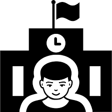

Eticá y Cuidados
Como volver a valorar la convivencia.
Ética del Cuidado
La ética del cuidado pone en el centro la importancia de los vínculos humanos, la empatía, la interdependencia y la responsabilidad mutua.
En un mundo cada vez más individualista, es urgente recuperar el valor del cuidado como fundamento de una sociedad más justa, equitativa y sostenible.
Las tareas de cuidado no solo abarcan el acompañamiento físico o emocional, sino que también implican escucha, paciencia, atención plena y compromiso.
Estas acciones han sido históricamente asociadas a las mujeres, lo que ha generado una gran desigualdad en su reparto y reconocimiento.
¿Por qué es importante revalorizar el cuidado?
- El cuidado es esencial para la vida y el bienestar de todas las personas.
- Reconocerlo fortalece una sociedad más humana y solidaria.
- Fomenta una cultura de respeto, escucha y colaboración.
- Desafía los roles de género tradicionales asignados al cuidado.
- Genera nuevas formas de liderazgo basadas en la empatía.
Cuidado y comunidad
El cuidado no es solo una responsabilidad individual, sino también una tarea colectiva.
En contextos comunitarios, el cuidado mutuo puede ser una herramienta de transformación social y de resistencia frente a las desigualdades.
Educar desde la ética del cuidado permite enseñar a valorar el tiempo compartido, los afectos y el trabajo invisible que sostiene la vida cotidiana.
Esta visión fomenta el compromiso social y el respeto a la diversidad en todas sus formas.
la ética del cuidado en la educación es clave para construir relaciones igualitarias, promover el respeto a la diversidad
y valorar lo afectivo como parte esencial del desarrollo humano.